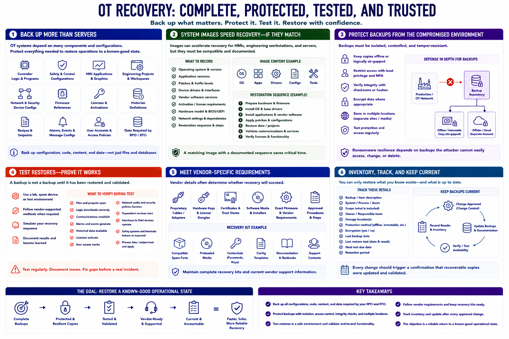

Backup and Recovery for OT Systems
Connecting to LMS... Progress: in progress

Narration
OT recovery requires more than server backups. Preserve controller logic, safety and control configurations, HMI applications, engineering projects, network and security-device settings, firmware references, licenses, historian definitions, recipes, and the data required by the recovery objective.
System images can accelerate recovery for HMIs, engineering workstations, and servers, but hardware, drivers, vendor software, and activation requirements must match. Record the operating system, application version, patches, device interfaces, and restoration sequence.
Keep protected copies offline or otherwise separated from ordinary administrative access. Use access control, integrity checks, encryption where appropriate, and multiple locations. Ransomware resilience depends on backups that the compromised environment cannot easily alter or delete.
Restore testing is the proof that a backup works. Use a lab, spare device, test environment, or vendor-supported process where production restoration would be unsafe. Verify not only that files open, but that logic, communications, alarms, licenses, and dependent services function together.
Vendor-specific requirements can determine success. Some systems require exact firmware, proprietary cables, hardware keys, certificates, or approved procedures. Maintain recovery kits, compatible spares, software media, credentials, and current support contacts.
Track backup age, scope, owner, storage location, protection, and last restore test. After every approved change, confirm that recoverable copies were updated. A backup inventory should map directly to critical processes and recovery sequences, ensuring the organization can restore a known-good operational state rather than isolated files.